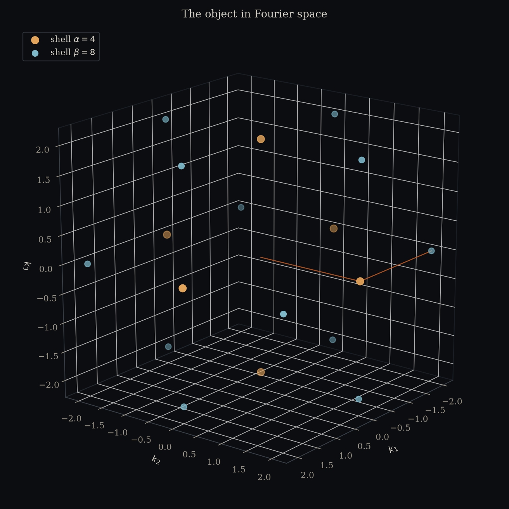
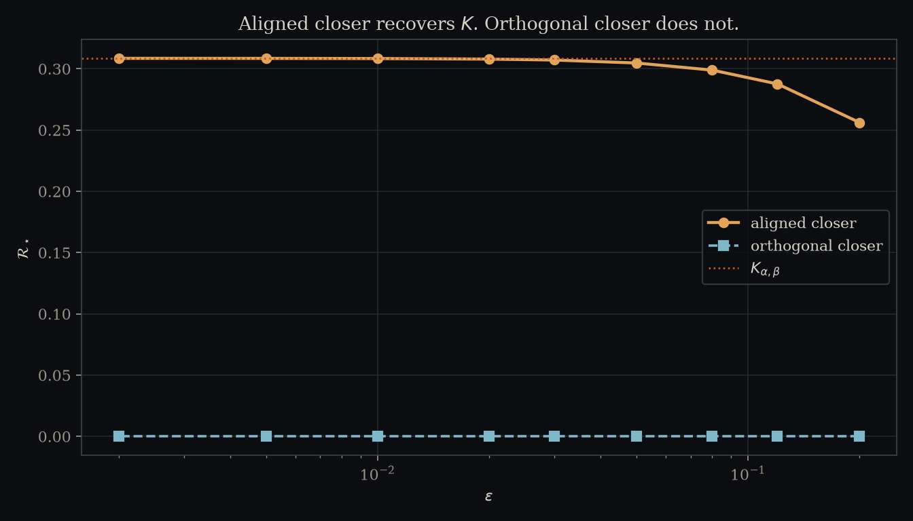
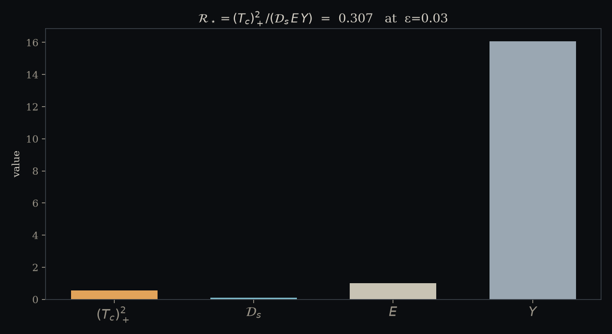
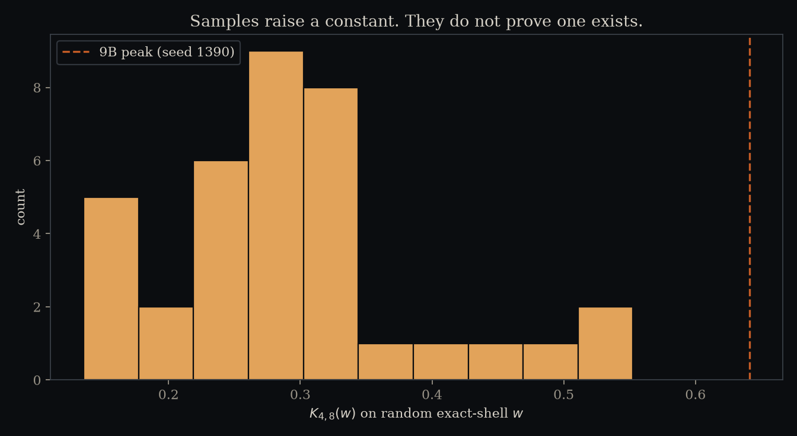

(Tc)+² / (𝒟s E Y)
- α, β
- 4, 8
- K
- —
- ℛ★
- —
- Tc
- —
- 𝒟s
- —
Drag the lattice. A finite K is not a constant. An orthogonal closer is not the 9B quotient.




What this is
A public instrument for the boxed leftover, not an announcement that the leftover sits. Release the folder. The picture is the object. The bound is still the hole.
Featured pair (α,β)=(4,8) — the same shells as the 9B peak. 9B max K ≈ 0.641 on a different seed. This gallery’s featured K is a single field, not that peak, and not C0.